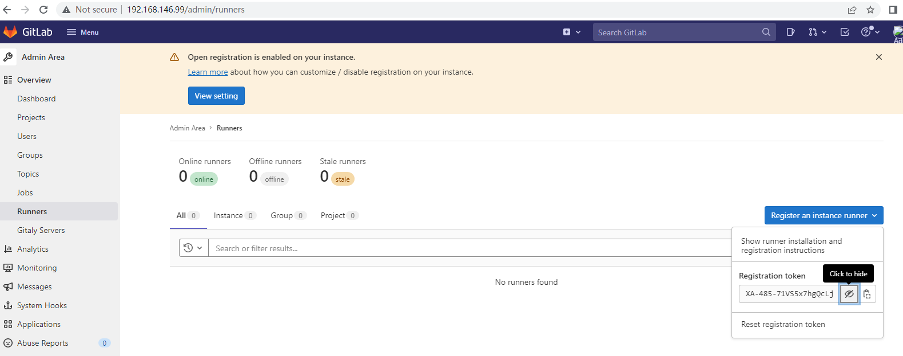
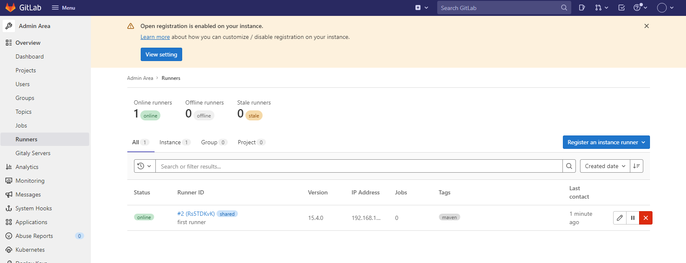

Ｄocker运行gitlab-ce server
安装
mkdir -p /data/gitlab/{config,logs,data}
docker run -d \
--hostname 192.168.146.99 \
-p 10022:22 -p 80:80 -p 443:443 \
--restart always \
--volume /data/gitlab/config:/etc/gitlab \
--volume /data/gitlab/logs:/var/log/gitlab \
--volume /data/gitlab/data:/var/opt/gitlab \
--name gitlab \
gitlab/gitlab-ce
访问,
wait for about 5 minutes
用户root口令在文件: cat /data/gitlab/config/initial_root_password
root
访问 http://192.168.146.99
,先修改口令为: Q1w2e3r4
建立repo
新建一个group test, 设为public
测试在test group,新建一个repo log-collection,设为public, push ,commit
push commit,
clone log-collection to local and commit , push
git clone http://192.168.146.99/test/log-collection.git
cp code from https://gitee.com/mikerain/log-collection.git
# git push origin main
Username for 'http://192.168.146.99': root
Password for 'http://root@192.168.146.99':
Counting objects: 43, done.
Delta compression using up to 4 threads.
Compressing objects: 100% (34/34), done.
Writing objects: 100% (42/42), 18.69 KiB | 0 bytes/s, done.
Total 42 (delta 1), reused 0 (delta 0)
To http://192.168.146.99/test/log-collection.git
be8417d..1fdb594 main -> main
find runner token from gitlab
在Gitlab ->admin area->Runner->registry an runn

Runner安装
https://blog.csdn.net/weixin_42151900/article/details/123820266
docker
pod
shell
wget https://packages.gitlab.com/install/repositories/runner/gitlab-runner/script.rpm.sh
sh script.rpm.sh (要求能上网)
# gitlab-runner status
Runtime platform arch=amd64 os=linux pid=19546 revision=43b2dc3d version=15.4.0
gitlab-runner: Service is running
systemctl status gitlab-runner.service
# gitlab-runner register
Runtime platform arch=amd64 os=linux pid=17936 revision=43b2dc3d version=15.4.0
Running in system-mode.
Enter the GitLab instance URL (for example, https://gitlab.com/):
http://192.168.146.99
Enter the registration token:
XA-485-71VS5x7hgQcLj
Enter a description for the runner:
[gitlab]: maven runner
Enter tags for the runner (comma-separated):
maven
Enter optional maintenance note for the runner:
Registering runner... succeeded runner=XA-485-7
Enter an executor: custom, docker, ssh, docker+machine, docker-ssh+machine, docker-ssh, parallels, shell, virtualbox, kubernetes:
shell
Runner registered successfully. Feel free to start it, but if it's running already the config should be automatically reloaded!
Configuration (with the authentication token) was saved in "/etc/gitlab-runner/config.toml"
gitlab-runner -h 可使用其他子命令
检查runner registry
是online状态

然后修改此runner,可以运行untagged job,不然下面的job会一什pending
配置并行
concurrent: limits how many jobs globally can be run concurrently. The most upper limit of jobs using all defined runners. 0 does not mean unlimitedlimit: limit how many jobs can be handled concurrently by this token.
/etc/gitlab-runner/config.toml file:
/etc/gitlab-runner/config.toml on *nix systems when GitLab Runner is executed as root (this is also path for service configuration)
~/.gitlab-runner/config.toml on *nix systems when GitLab Runner is executed as non-root
./config.toml on other systems
systemct restart gitlab-runner
修改 .gitlab-ci.yml
job1:
script:
- echo "my build job"
再修改,多步
job1:
stage: build
script:
- echo "my build job"
job2:
stage: test
script:
- echo "my test job"
再修改,多步,并行
job1:
stage: build
script:
- echo "my build job"
job2:
stage: test
script:
- echo "my test job1"